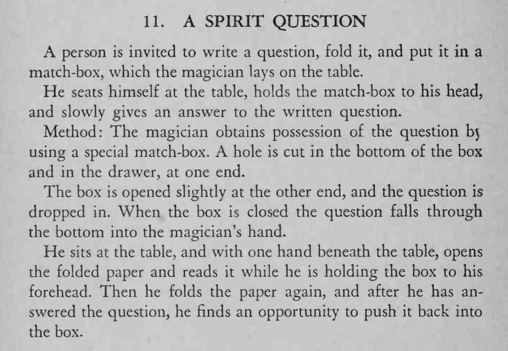

观众写好问题折起来放进火柴盒，魔术师把火柴盒贴在额头上，竟慢慢说出了纸上那个问题的答案。
开盒、合盒的动作要自然，纸要折得够小，才能顺利从洞里落下。

A person is invited to write a question, fold it, and put it in a match-box, which the magician lays on the table. He seats himself at the table, holds the match-box to his head, and slowly gives an answer to the written question. Method: The magician obtains possession of the question bj using a special match-box. A hole is cut in the bottom of the box and in the drawer, at one end. The box is opened slightly at the other end, and the question is dropped in. When the box is closed the question falls through the bottom into the magician's hand. He sits at the table, and with one hand beneath the table, opens the folded paper and reads it while he is holding the box to his forehead. Then he folds the paper again, and after he has answered the question, he finds an opportunity to push it back into the box.